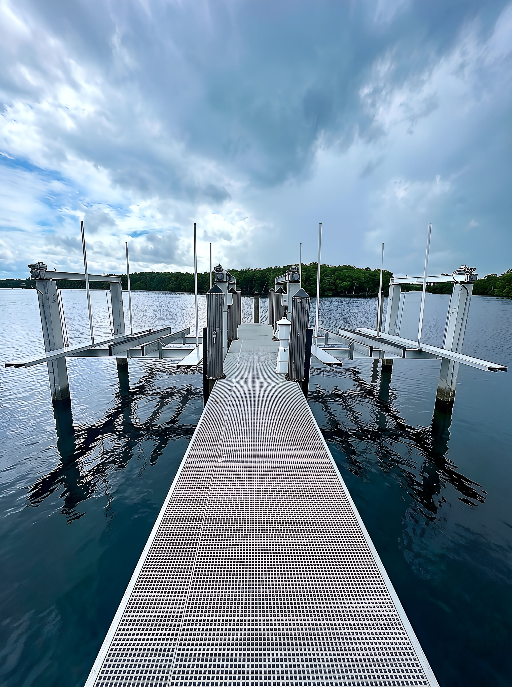
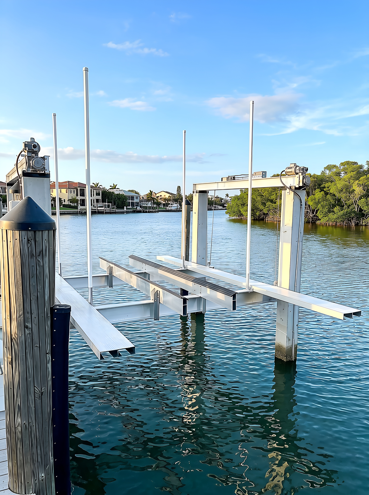
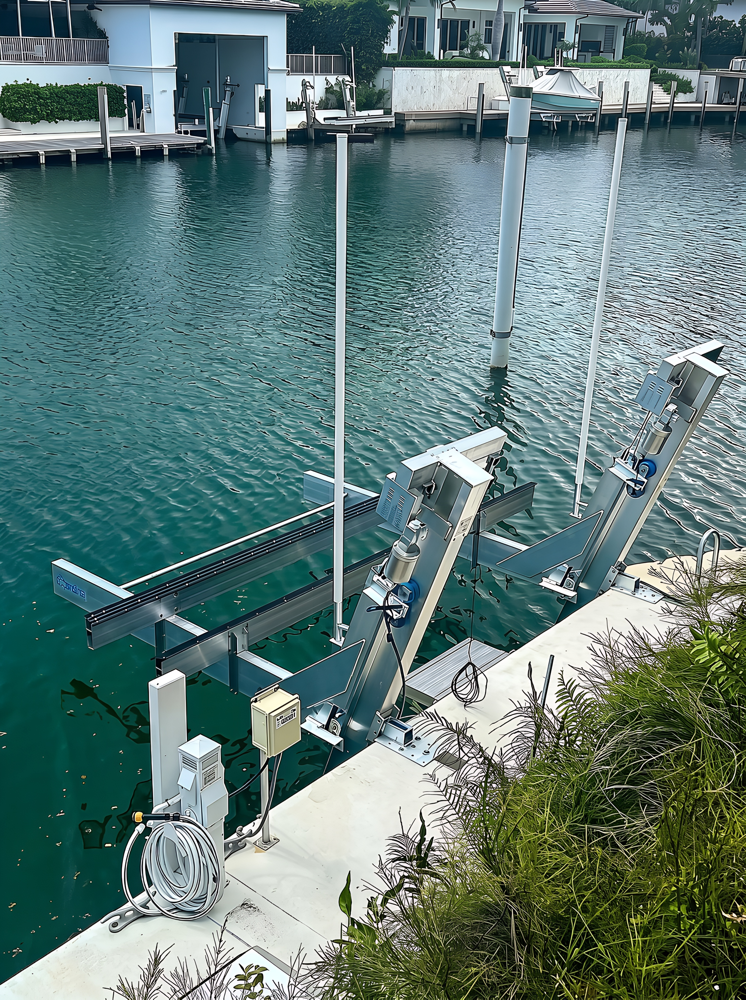
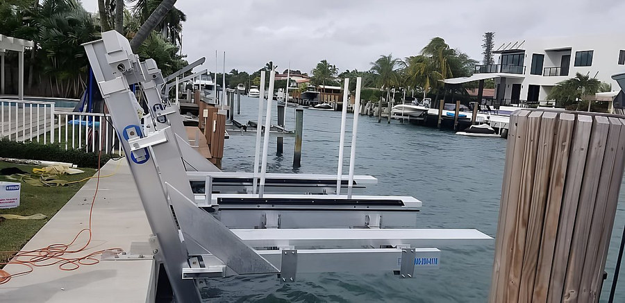
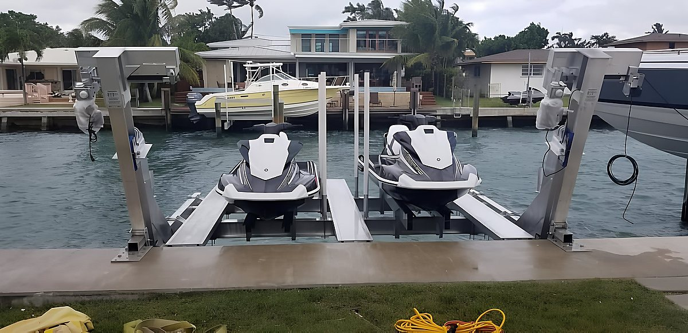
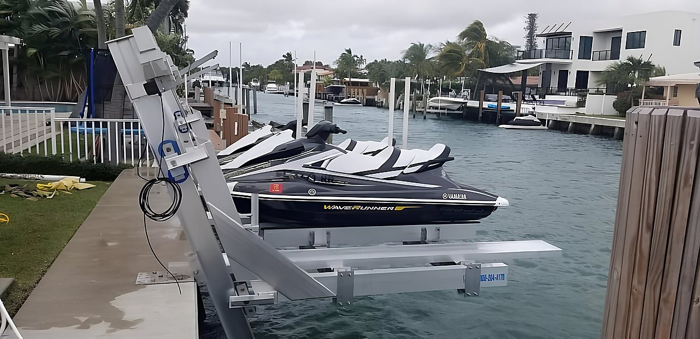
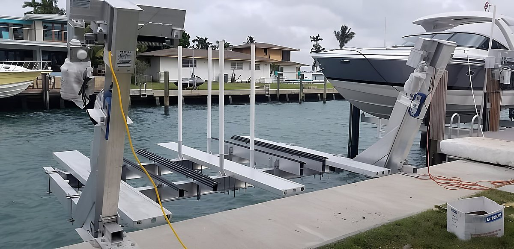
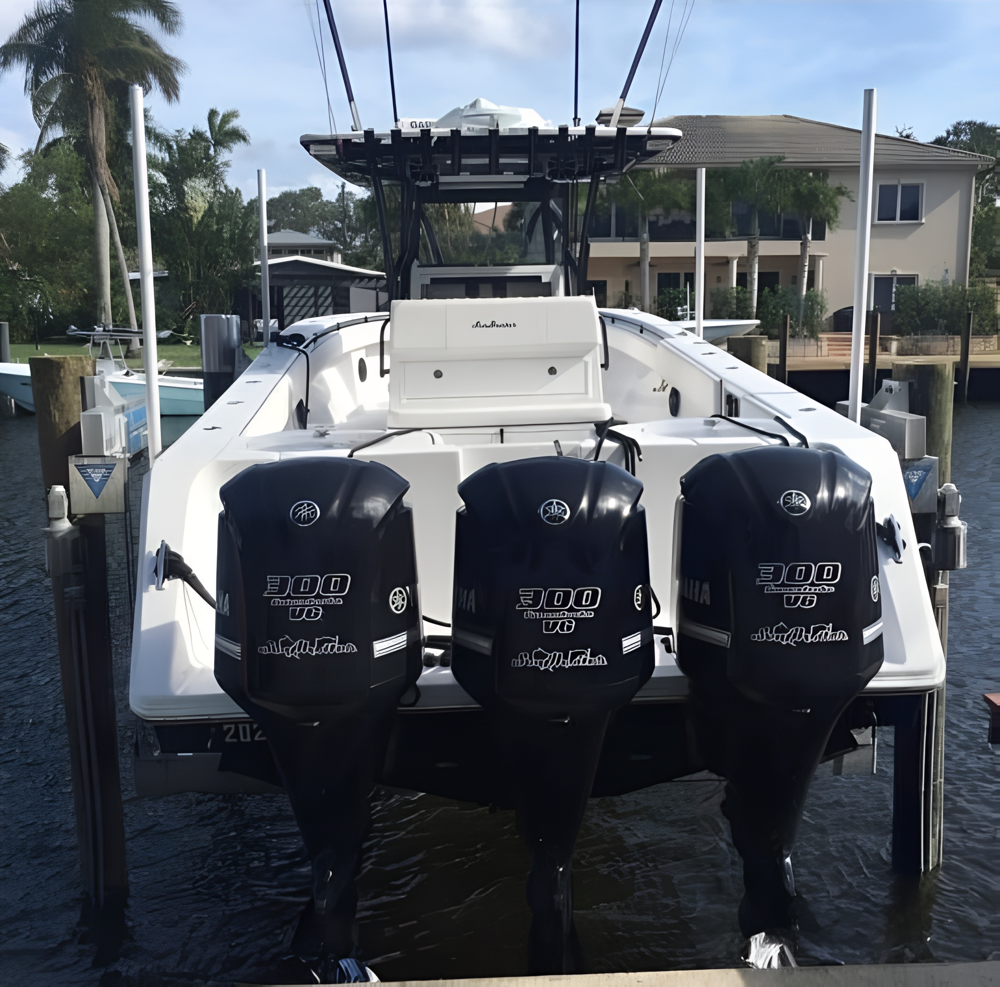
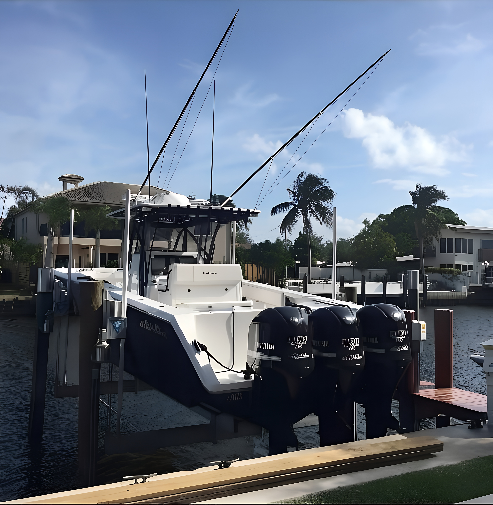

Protect your vessel investment with a precision-installed boat lift system — matched perfectly to your boat, your dock, and your lifestyle.

Keeping your boat in the water 24/7 accelerates barnacle growth, osmotic blistering, and hull deterioration. A professionally installed boat lift keeps your vessel out of the water when not in use — extending its lifespan, reducing maintenance costs, and making every departure effortless.
Contour Marine installs boat lift systems for vessels of all sizes — from sport boats and center consoles to large offshore yachts and catamarans. We evaluate your vessel weight, dock configuration, and water conditions to recommend and install the ideal system.

No two boats are the same — and no two dock setups are identical. That's why we offer a full range of boat lift systems and customize every installation to your specific situation. From a 4,000 lb. center console to a 30,000 lb. sportfisher, we have the right solution.
Our team works with leading lift manufacturers and handles all aspects of the installation — from structural piling reinforcement to electrical wiring and remote control setup. The result is a seamless, reliable system that makes boating easier and your dock look extraordinary.

Our advanced boat lift installations feature precision controls and reinforced structural components designed for smooth, reliable operation under South Florida's demanding coastal conditions. Every system is engineered for strength, longevity, and effortless daily use.
From electrical control boxes to heavy-duty guide systems and corrosion-resistant hardware, every component is selected to perform in saltwater environments for decades. We handle every detail from installation to final inspection.
A dual PWC lift system with twin aluminum cradles, independent hoist motors, and a clean side-mount installation along a South Florida residential canal — photographed from multiple angles to show every detail.

Frame Installation
Front View — Both PWC Loaded
Side Angle — WaveRunner Detail
Wide View — Cradles & Dock ContextA triple-engine center console installed on one of our custom boat lift systems — photographed from two angles to show the full setup.


A boat lift is one of the best investments you can make for your vessel and your waterfront.
Eliminates barnacle growth, electrolysis, and osmotic blistering from prolonged water exposure.
Boats kept out of water cost significantly less to maintain year over year.
Hit the water in minutes — no waiting for haul-outs or dealing with dock lines.
Tell us about your boat and dock. We'll recommend the perfect lift system and give you a free quote.